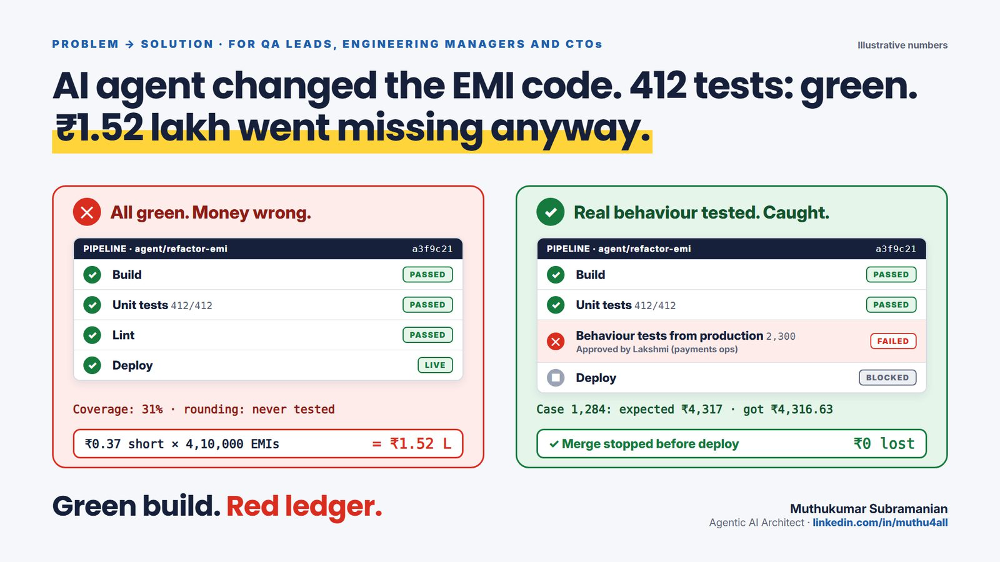
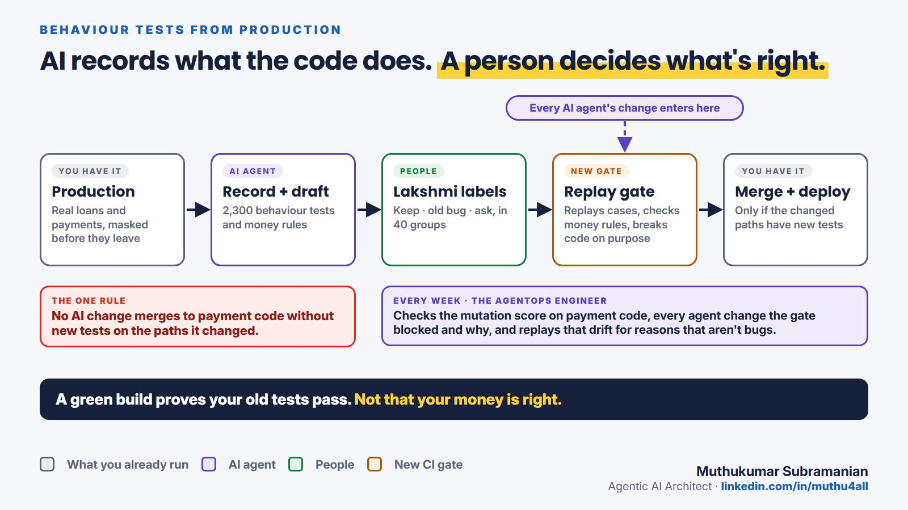
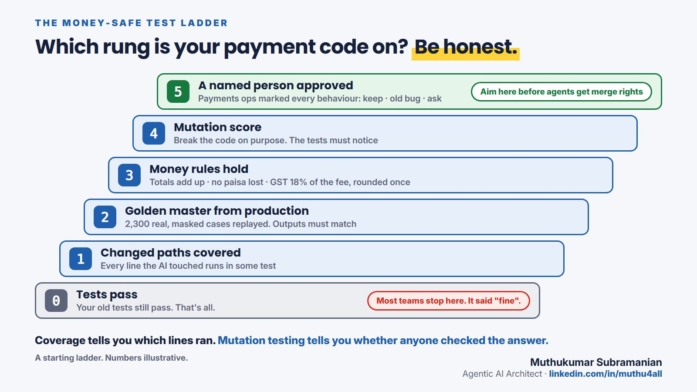

Your AI Agent Changed the Payment Code. Your 2012 Test Suite Said It Was Fine.
By Muthukumar Subramanian · Agentic AI Architect

Tuesday, 11:40 PM, an NBFC in Guindy that lends for two-wheelers and phones. Arjun, a senior developer, asks an AI coding agent to tidy up the EMI recalculation module. The code is from 2012. Nobody who wrote it still works there.
The agent does a clean job. 388 lines out, 214 in, readable names, comments where there were none. The pipeline runs: build ✓, 412 unit tests ✓, lint ✓, deploy ✓. All green. Arjun merges and goes to bed.
Three weeks later, Lakshmi in payments ops runs the month-end reconciliation. Collections are short. Not by much: 37 paise per EMI on average. Across 4,10,000 EMIs, that's about ₹1.52 lakh, and every one of those schedules now disagrees with the one the customer signed. (The NBFC, the people and every number here are illustrative.)
What happened? After a part-prepayment, the 2012 code rounded the new EMI up to the next whole rupee. The agent's version rounds to the nearest paisa. Tidier. Arguably more "correct". And different from 14 years of loan schedules.
No test checked it. The suite covers 31% of the code, and part-prepayments were added in 2017 with no tests at all. Nothing tests the GST on processing fees either.
A green build only proves your old tests still pass. It doesn't prove your money is right.
The problem: AI changes code faster than your tests can follow
Test debt isn't new. For years it only made us slow: people were scared to touch the payment module, so they didn't. That fear was a safety feature nobody wrote down.
AI agents remove the fear. A refactor that took a team a quarter now takes an evening. The tests didn't get any better overnight, so the same thin suite now guards ten times as many changes.
Google's DORA research saw a hint of this in its 2024 report: it estimated that every 25% rise in AI adoption came with a 7.2% drop in delivery stability. That's a survey correlation, not proof. But it matches what I see in legacy codebases.
In money code, three things make it worse:
→ Coverage lies politely. 31% tells you which lines ran, not whether anyone checked the answer.
→ Rounding lives in the gaps. Paise, GST, part-prepayments, the last instalment. The old tests were written for the happy path of 2012.
→ The reviewer can't see it. A diff that reads better than the original gets approved. Nobody reviews a rounding mode at midnight.

The solution: write the tests from what production actually does
You don't hand-write 2,000 tests for a 14-year-old module. You record them, and a person approves them.
→ 1. Characterisation tests, or a "golden master". Michael Feathers named the idea in Working Effectively with Legacy Code: before you change old code, write tests that pin down what it does today, not what the spec says. Run a few thousand real, masked transactions through the current code and save the outputs. Any change to an output becomes a question.
→ 2. Replay production traffic in a sandbox. Record real API calls along with their database and downstream responses, then replay them against the new build. Keploy, an open-source project started by Indian founders, works this way.
→ 3. Property tests for money rules. Instead of examples, state rules that must hold for any loan: principal plus interest equals the total paid; no paisa appears or disappears after a prepayment; GST is 18% of the processing fee, rounded once. Tools like jqwik or Hypothesis throw thousands of random loans at those rules.
→ 4. Mutation testing. Break the code on purpose (change a >= to >, round down instead of up) and see if any test notices. PIT does this for Java, Stryker for JavaScript, C# and Scala. If the broken code still passes, your tests are decoration.
→ 5. AI drafts, a person approves. GitHub Copilot, Claude Code or Cursor can draft tests at scale, and Diffblue Cover generates Java unit tests that capture current behaviour. But recorded isn't the same as correct. Lakshmi goes through the cases in groups and marks each one: keep, old bug, or ask.
→ 6. One rule for the agents. No AI change merges to payment code without new tests on the paths it changed.
In our story, the replay stage fails on case 1,284: expected ₹4,317, got ₹4,316.63. The merge stops. Lakshmi marks whole-rupee EMIs as "keep", because that's what the customers' schedules say. Arjun's refactor goes in the next day with the rounding put back, and with a test that will catch it for good.
Tests are memory that runs.

👉 [GIF: B-day22-4-in-article-pipeline-replay.gif]
Caption: One AI change, two pipelines. The old one is all green while money leaks; the new one replays production cases, one turns red, and the merge stops. All details illustrative.
Who does this work
Recording behaviour is easy. Knowing which behaviours matter isn't. That's work for a forward deployed engineer (FDE): an engineer who works inside the customer's team and ships on their real systems. Here that means two weeks with payments ops, learning the edge cases nobody wrote down: a part-prepayment on the EMI date, a bounced NACH debit presented again, a waived processing fee that still needs its GST handled right.
Then someone has to run it. Some teams call that person an AgentOps engineer: they own the rules the coding agents work under, watch the mutation score on payment code and look at every agent change the gate blocks. The titles are still settling. The job isn't new. It's the QA lead's job, with AI agents to supervise.
On 25 Oct I wrote "Your Last COBOL Expert Retires Next Year. Who Remembers Why the Code Works?" This is part of the answer. When the people who remember leave, tests are what's left.
The hard parts
→ The golden master freezes old bugs too. That's why a person approves. Expect a few uncomfortable finds, like GST that's been rounded twice since 2019.
→ Production data is personal data. Mask names, account numbers and phone numbers before anything leaves production. The DPDP Act doesn't stop applying because it's a test environment.
→ Replays drift. Dates, rate resets and holidays change outputs for reasons that aren't bugs. Budget time to make them stable.
→ Mutation testing is slow. Run it on the payment paths, nightly, not on every commit.
→ Lakshmi has a day job. Nobody reads 2,300 cases one by one. Group them by behaviour, and she approves 40 groups, not 2,300 rows.
The opportunity
→ For QA leads: pick your riskiest money module and run a mutation tool on it this week. The number of broken versions your tests didn't notice is your real coverage number.
→ For engineering managers and CTOs: make "new tests on changed paths" a merge rule for agent changes before you give agents more access, not after.
→ For payments and ops teams: you're part of testing now. Your "that's not how we do it" is the most valuable test input there is.
→ For IT services firms and testing startups: test-debt paydown for banks, NBFCs and fintechs. Record, characterise, get domain sign-off, then let the agents in. Every lender modernising a 2010s loan system needs this before AI agents can touch it safely.
Your turn 👇
Your payment code's tests: would you trust them with an AI agent's change tonight? Yes or no.
Tag the QA lead who's been asking for time to fix the tests since 2019.